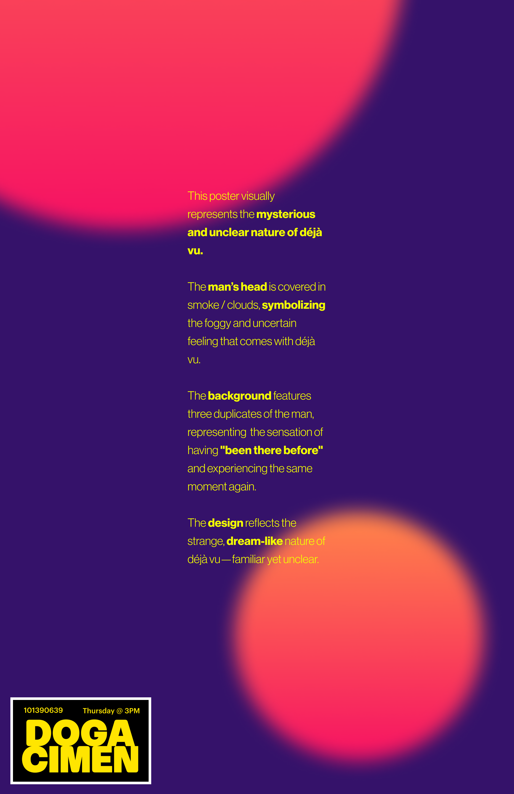
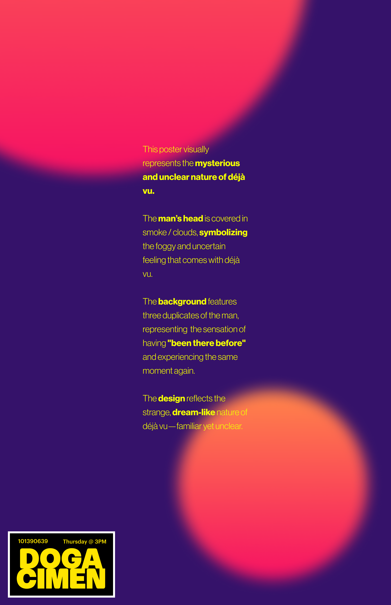

//WEEK 04: INSIDE0UTSIDE
about
This project explores the feeling of déjà vu — when something feels
familiar, but you can’t fully explain it.
The words on screen start out scrambled, and slowly unscramble,
revealing words like "MEMORY", "BLURRED", "AGAIN". The idea is that
things start out unclear, then seem clear for a moment, and then
disappear — just like déjà vu. You recognize something, but only for
a second, and then it’s gone again.
This was based on the same idea behind my Week 4 poster — where a
man's head is covered in clouds, and his image repeats in the
background. Both the interaction and the visual design are meant to
show how déjà vu feels: familiar, blurry, and hard to explain.
rationale
This poster visually represents the mysterious and unclear nature of
déjà vu. The man’s head is covered in smoke / clouds, symbolizing
the foggy and uncertain feeling that comes with déjà vu.
The background features three duplicates of the man, representing
the sensation of having "been there before" and experiencing the
same moment again. The design reflects the strange, dream-like
nature of déjà vu—familiar yet unclear.
 
